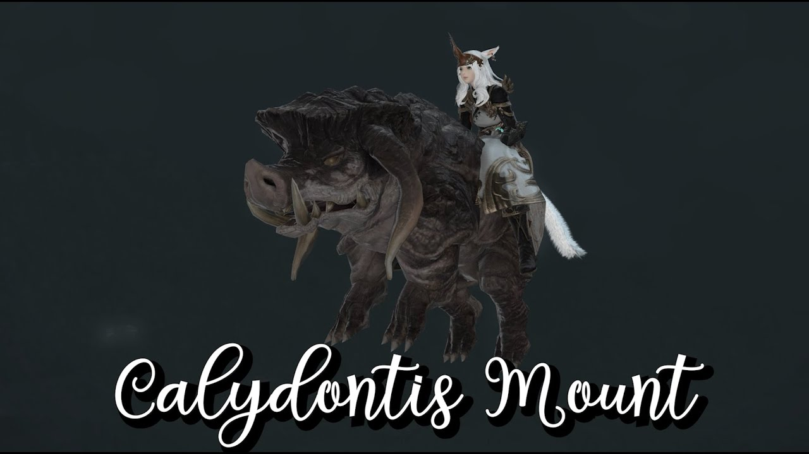
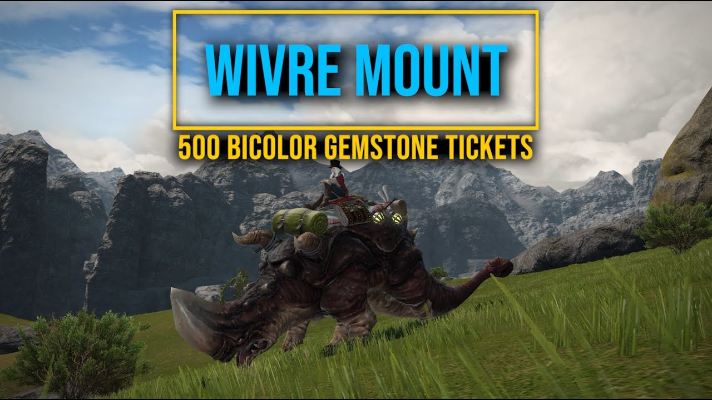

(
(
How to Get Calydontis & Wivre Mount on Final Fantasy XIV?
Square Enix added a handful of new and valuable mounts in Endwalker, including the Calydontis & Wivre mount. If you're interested in collecting two mounts, here's what you need to do to unlock the Calydontis & Wivre mount in Final Fantasy XIV: Endwalker.
How to get Calydontis mount in Final Fantasy XIV?

Here's what you need to know about how to get the Calydontis mount in Final Fantasy XIV:
1). To unlock the Calydontis mount in Final Fantasy XIV, players must trade Khloe's Gold Certificate of Commendation in exchange for the mount.
2). Those certificates are earned by completing Khloe's Journals of Wondrous Tails.
3). If you've yet to unlock the Wondrous Tails, you can speak to an Unctuous Adventurer in Idyllshire at coordinates (X:7.0, Y:5.9).
4). The Unctuous Adventurer will ask you to speak to Khloe Aliapoh at the coordinates (x5.7, y6.1).
5). Khloe Aliapoh lets you open the Wondrous Tails by completing the "Keeping Up with the Aliaphos" quest.
6). It's a speedy quest. You'll receive a new journal from Khloe every Tuesday.
7). You'll be able to receive one Khloe's Gold Certificate of Commendation each week by completing three lines in the journal.
8). Every week, you may talk to Khloe Aliapoh again to receive a new Wondrous Tails journal.
9). Once you've earned Khloe's Gold Certificate, you can speak to Khloe Aliapoh in Idyllshire (X: 5.7 Y: 6.1) to trade the commendation in for your new mount.
How to get a Wivre mount on Final Fantasy XIV?

Here, we're going to cover what you need to do to unlock the Wivre mount in Final Fantasy XIV:
1). For the Wivre mount, you want to unlock all of the Endwalker regions in Final Fantasy XIV and complete the Main Scenario quests to make sure you have them all completed.
2). Once you've done that, the next step is to increase the ranking of each location's Share FATE levels.
3). To check a zone's rank, players will open the "Travel" tab from the "Main Menu" and select "Shared FATE."
4). The new window will display the total number of Bicolor Gemstones and the ranking for each zone.
5). Leveling up a rank requires a player to complete FATEs.
6). Completing a single FATE unlocks rank 1, 6 FATEs unlocks rank 2, and 60 FATEs unlocks rank 3.
7). You must take care of finishing the FATE in all six regions to reach level 3.
8). After you reach level three, you'll unlock access to Bicolor Gemstone Vouchers.
9). The bicolor gem vouchers are part of the task of knowing How to get a Wivre mount. And it is necessary to earn at least 500 of them.
10). Each voucher costs an amount of 100 Bicolor Gemstones, so that means you might want to save up all of the Bicolor Gemstones you acquire as much as you can.
11). When you have 500 Bicolor Gemstone Vouchers, you need to speak with Edelina in Mor Dhona (X:22.1, Y:4.9). This merchant of fine wares will have the Wivre mount you seek.
Additionally, players can purchase the Bicolor Gemstone Vouchers from Final Fantasy 14's Market Board. But be warned, they are expensive now (over one million FFXIV Gil per voucher, so 500 million Gil for the mount, depending on the different servers).
Now that you know how to get the Calydontis & Wivre Mount, you should embark on this task that is on the game. For more on Final Fantasy XIV, visit the BUYFFXIV4GIL.COM's news page for other articles, like how to get the anima weapons.